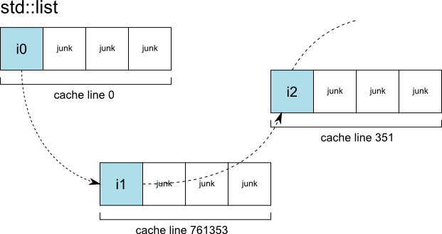
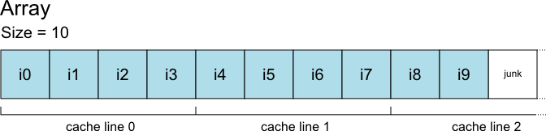

Don’t use std::list
Sat, Aug 29, 2015I feel like I’ve been saying this a lot lately. At least once per intern we take at Pastagames. Now instead of explaining why I say it, I’ll give people this link. You’re welcome.
Before we continue, be sure to know what a doubly linked list is and how memory accesses work (you just need to read the overview).
So what’s wrong with std::list?
Mostly one thing: each node is allocated separately – nodes are not contiguous in memory. It means that when you access a node, the chances that it’s already in the cache is virtually 0% (in a real-life application using a lot more memory than the size of your CPU’s biggest cache). And when the size of a node is smaller than a cache line, everything else in the cache line is useless, it’s cache pollution. So in short, lots of cache misses and very bad use of the cache itself.

How bad is a cache miss?
It’s a complicated question, because a lot of things can affect the actual latency of the memory and current CPUs know several tricks to hide this latency (notably hardware prefetching and out-of-order execution). But those tricks have their limits, and in our case they don’t help, because the memory accesses are seemingly random (unpredictable) and dependent on each other.
To give you a rough idea, on a recent Intel i7 processor (Haswell architecture) with DDR3-1600 RAM (which also pretty recent), a last level cache miss has a latency of the equivalent of 230 clock cycles. In comparison, you can expect the same CPU to execute 2 instructions per cycle, when nothing is slowing it down.
Now take a second to imagine all those cycles wasted when you are iterating over a list. One cache miss per item in the list. Imagine all you could do with this time.

So yeah, it’s pretty bad. Cache misses are one of the most (the most?) common bottlenecks in today’s programs, so it’s worth taking them into account at every step.
What’s the alternative solution(s)?
Usually, an array and an int (containing the size of the list) are enough. Yes, that’s it.

Better cache usage and predictable memory accesses. The CPU is super happy.
You want to insert an item after another? Just move every items after it by one step and place your new item in the newly freed place. If your list is reasonably small, this is WAY faster than allocating memory on the heap and waiting for N cache misses – N being the number of std::list nodes you touched: at least 2 but probably a lot more if you iterated over the list to find where to place your item. Note that if you iterated, the array is cheaper than the std::list no matter the size. And guess what, you always iterate.
If you want to delete an item and the order doesn’t matter, you can swap it with the last item in the array and decrease the size by 1. If the order is important, you’ll have to move everything, like for the insertion. But again, this is probably way cheaper than a call to std::list::erase and definitely cheaper than a call to std::list::remove.
If you cannot determine an upper bound for the size of the list, you can use an std::vector instead of an array. But if you think about it for a minute, there are many cases where a reasonable maximum is easily found. You can also allocate an array of variable size on the stack with alloca (it’s not standard, but all the compilers support it).
If you need mostly to pop elements from the front of the list, use a circular buffer instead. An array and two ints, that is. One index for the head, one for the tail.
Dozens of other (more complex) alternatives exist, but the simple solutions above should cover 90% of the cases. And with what you learned reading this, you should be able to improvise a sensible solution for the 9.9% remaining.
When is an std::list really useful?
That’s the remaining 0.1%, if you’re paying attention. It’s when the items are so big that moving them around would be more expensive than doing the memory allocation plus waiting for the cache misses. And because one item would cover many cache-lines, having them contiguous in memory would make almost no difference. But hey, you could also use an array of pointers.
Bonus point: ever heard about std::map?
The std::map is an associative container that uses a binary search tree to speed up searches.
They suffer the same problem as the std::list, their nodes are allocated separately too. So if the number of elements in the map is relatively low and the size of the keys is relatively small, doing a linear search in an unsorted array will be a lot faster than paying a cache miss for every node the binary search would visit. If you are iterating over an std::map, just go in the corner and think about what you’ve done.
In this case, the alternative solution is two arrays (and one int for the size). The first array contains the keys and the second the values. The first key is associated to the first value and so on. They are better stored separately because when doing a search you only need to read the keys, not the values.
Depending on the use case, you can also sort the arrays or have a small cache to speed up searches. But if the arrays are small, that’s usually unnecessary.
Bottom line
The STL is full of fancy algorithms with interesting complexity (O (log N) or better for the most part). But fancy algorithm always have a big hidden constant k that make them slower than simple O(N) algorithms for any small N.
std::list is the exception to this rule. It’s worse than an array for any N. Don’t use std::list.